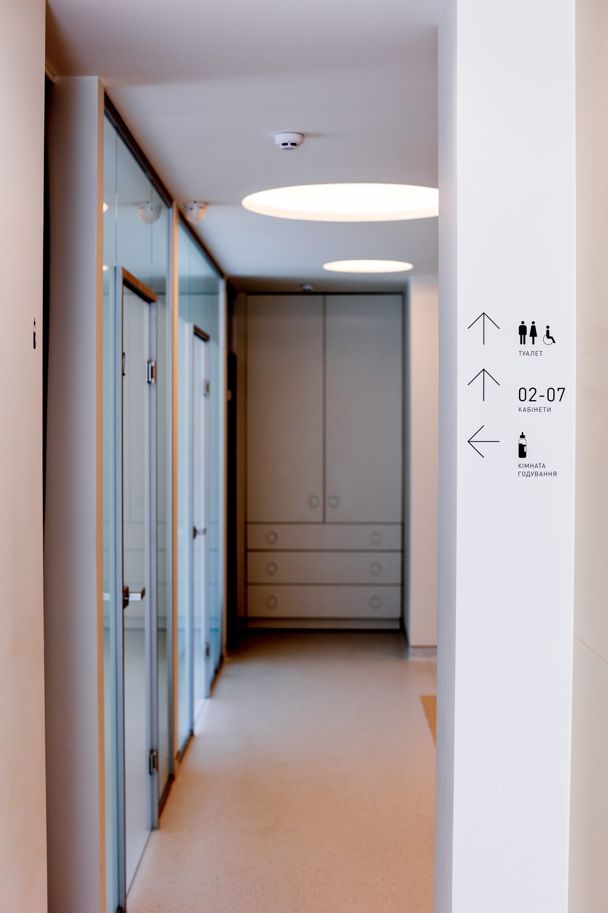
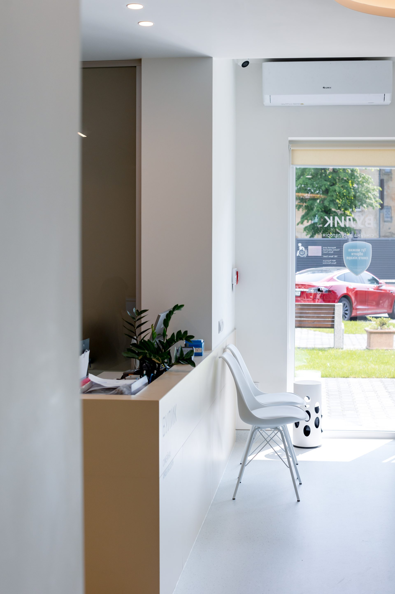
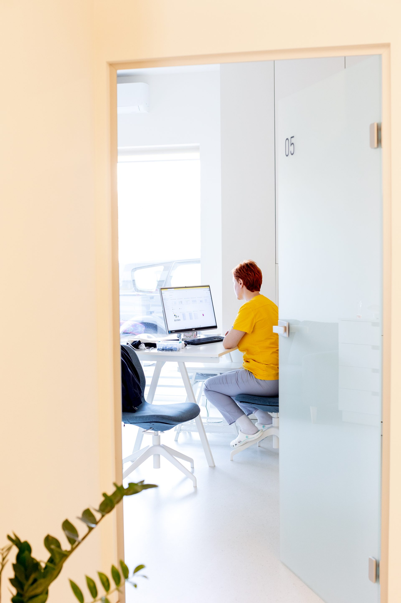
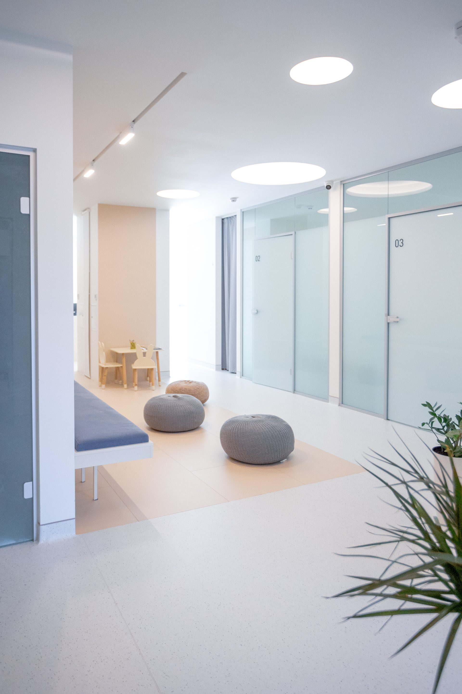
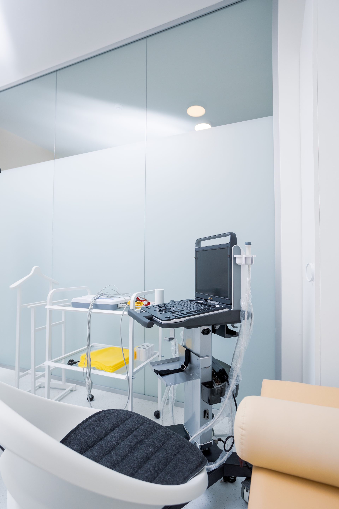
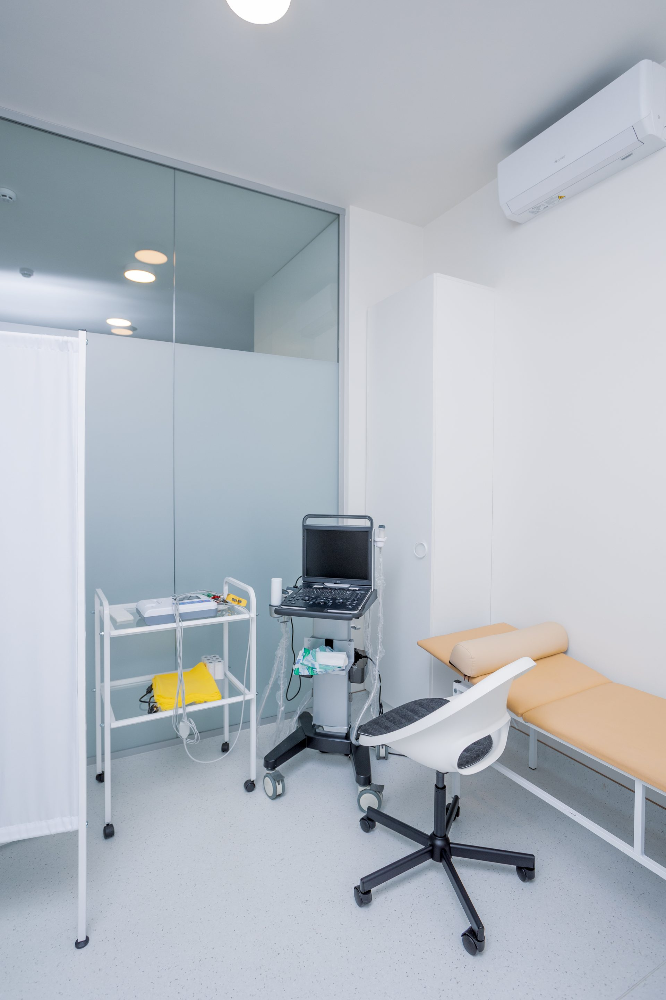

+38 (096) 281-73-38
Пн–Пт: 9:00–19:00 | Сб–Нд: 10:00–18:00
Записатися
Локація · Львів
ЖК Park Tower






Що ми пропонуємо
Наш персонал


вул. Стрийська, 86В
ЖК Park Tower, Львів
Прокласти маршрут →
Пн–Пт: 9:00–19:00
Сб–Нд: 10:00–18:00